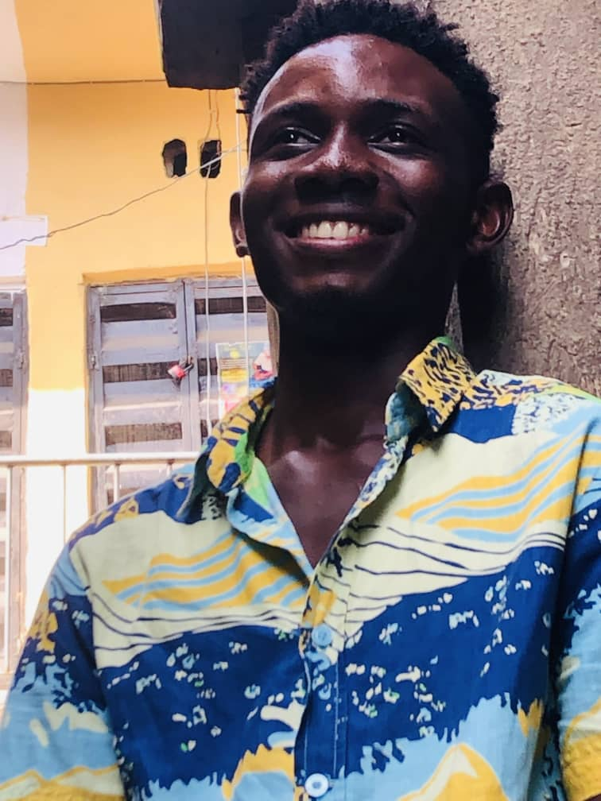

About Me

My name is Victor Chukwuka Onwe, A student of Nnamdi Azikiwe University, Awka Department of Electrical Engineering.
A Graphics designer, An Electrician and Solar Technician. Currently undertaking courses to become a professional UI/UX Designer,
Full Stack Computer Programmer, Digital Marketer and a French linguist. I wish to also learn how to drive a bike and a car,
later on how to fly.
EDUCATIONAL QUALIFICATIONS
First School leaving Certificate (FSLC):
- Little Saints Nursery and Primary School, Onitsha. 2004-2012.
- All Saints Nursery and Primary School, Onitsha. 2012-2013.
WASSCE:
- Federal Science and Technical College, Awka. 2013-2019.
Bachelors Degree: B.Eng
- Nnamdi Azikiwe University, Awka. 2019-2024.
Masters Degrees:
- Universite de France: Masters in Renewaable and Sustainable Energy.
- University of Finland: Masters in Engineering Management.
Post Graduate Diploma:
- Universite de France: Doctor of Sustainable Energy.
SKILLS
- Graphics Designer
- UI/UX Designer
- Full Stack Web Developer
- Proffessional Electrical CAD Designer
- Digital Marketer
- Electrician and Solar Technician
HOBBIES
Currently my hobby is listening to music and reading. But I intend to engage my writing talent which means story writting. Also,
i will learn how to swim, play chess and table tennis then boxxing too and also I will learn how to play guitar and keyboard.
Then i will travel the world and take pictures of it.
GOALS
I will migrate to France and Naturalize there, I will obtain my Masters in Electrical and Computer Engineering and then a PHD in either
of them before I turn 30th. I will marry the most beautiful and feminine woman ever and together, we would give our children the gifts of
- An excellent character
- Visionary, Avid Planner, Courageous
- Consistent, Perseveres and Optimistic
- loves, gives, protects his territory
- A good Name
- Opportunities
- A strong Passport
- The Best Education
- Freedom to do whatever good they want to do
together we will empower to Africans with
- Knowlege
- Capital
WORK EXPERIENCE
Founder and Chief Design Officer, Ceeman Renewable Energy.
AWARDS/CERTIFICATIONS/ACHIEVEMENTS
None yet